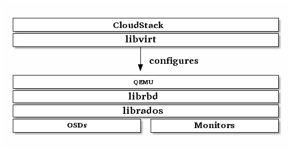

块设备与 CloudStack¶
CloudStack 4.0 及以上版本可以通过 libvirt 使用 Ceph 块设备， libvirt 会配置 QEMU 与 librbd 交互。 Ceph 会把块设备映像条带化为对象并分布到整个集群，这意味着大个的 Ceph 块设备性能会优于单体服务器。
要让 CloudStack 4.0 及更高版使用 Ceph 块设备，你得先安装 QEMU 、 libvirt 、和 CloudStack 。我们建议在另外一台物理服务器上安装 CloudStack ，此软件最低需要 4GB 内存和一个双核 CPU ，但是资源越多越好。下图描述了 CloudStack/Ceph 技术栈。

Important
要让 CloudStack 使用 Ceph 块设备，你必须有 Ceph 存储集群的访问权限。
CloudStack 集成了 Ceph 的块设备作为它的主要存储（ Primary Storage ），下列指令详述了 CloudStack 的安装。
Note
我们建议您安装 Ubuntu 14.04 或更高版本，这样就不用手动编译 libvirt 了。
Note
Make sure the /tmp partition on your hypervisors is at least 25GB. When deploying from a template from the first time /tmp will be used for converting the template from QCOW2 to RAW for storage on RBD. This is no longer valid starting from CloudStack version 4.4.0
Note
To use RBD with CloudStack 4.4.0 you require at least librbd version 0.67.7 (Ceph Dumpling). Otherwise template deployments and template backups will fail. In case you use Ubuntu we recommend at least LTS version 14.04
安装、配置 QEMU 用于 CloudStack 不需要任何特殊处理。确保你的 Ceph 存储集群在运行，配置好 QEMU 即可；然后安装 libvirt 0.9.13 或更高版本（也许得手动编译）并确保它与 Ceph 磨合正常。
Note
Ubuntu 13.04 版搭载了 libvirt 0.9.13 或更高版本，而且默认启用了 RBD 存储池。
创建存储池¶
默认情况下， Ceph 块设备使用 rbd 存储池，建议为 CloudStack NFS 主存储新建一存储池。确保 Ceph 集群在运行，再创建存储池：
ceph osd pool create cloudstack
创建 Ceph 用户¶
To access the Ceph cluster we require a Ceph user which has the correct credentials to access the cloudstack pool we just created. Although we could use client.admin for this, it’s recommended to create a user with only access to the cloudstack pool.
ceph auth get-or-create client.cloudstack mon 'allow r' osd 'allow class-read object_prefix rbd_children, allow rwx pool=cloudstack'
Use the information returned by the command in the next step when adding the Primary Storage.
详情见 用户管理 。
添加主存储¶
添加主存储方法见 添加主存储 (4.2.0) ，要添加一个 Ceph 块设备，步骤包括：
- 登录 CloudStack 界面；
- 点击左侧导航条的 Infrastructure ；
- 选择要用于主存储的域；
- 点击 Compute 标签；
- 选择图表中 Primary Storage 节点上的 View All ；
- 点击 Add Primary Storage ；
- 依次按提示执行：
- Protocol 那里选择 RBD ；
- 添加集群信息（支持 cephx ）。注：不要加用户名的 client. 部分；
- 把 rbd 加为标签。
创建存储服务¶
要新建硬盘存储服务，参考创建存储服务 (4.2.0) 创建一存储服务以与 rbd 相配，这样 StoragePoolAllocator 查找合适存储池时就会选择 rbd 存储池；如果存储服务没有与 rbd 标签相配， StoragePoolAllocator 就会选用你创建的存储池（即 clouldstack ）。
局限性¶
- ClouldStack 只能绑定一个监视器（但你可以创建一个轮询域名来滚动多个监视器）
- 在 Ubuntu 下你也许得手动编译 libvirt 0.9.13 。